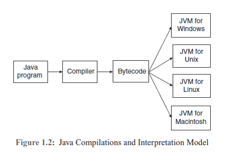

Origin of Java
- The Internet is a collection of various computers on different platforms and thus the need was felt for a language to handle communication between computers across platforms.
- Java was developed by a team from Sun Microsystems in 1991, led by James Gosling.
- Java was initially designed for programming home appliances such as washing machines, microwave ovens, televisions, etc.
- C ++ was taken as the model for designing a new language, which was called “Oak”.
-
There were two challenges facing the development team.
The first was that the appliances were controlled by various types of processors chip and there was need for a common language to work on these processors.
The second was that the compiler to be used in the home appliances needed a huge investment. - The programs developed for these machines were to be executed with the help of a compiler and executed to control the appliances.
- The development team adopted a two-step process. The first step was to translate the programs written for the appliances to an intermediate code, which was the same for all appliances. The second step was to execute the intermediate code in a step-by-step manner for a particular appliance.
- Programs written for one computer may not work on another computer. In that context, portability is a great asset for programming.
- Writing a program for one computer and executing it on another is called portability.
- The two-step process was adopted for programming. The first step is that the program written is translated by a Java compiler into standardized machine language called bytecode which is the same for all computers. The bytecode is a machine-independent intermediate code. The second step is to translate this bytecode into machine language using an interpreter for a particular computer.
- The bytecode is interpreted and executed on any platform having a Java Virtual Machine (JVM).
- To run the bytecode, it needs a JVM that serves as a language interpreter.
- The JVM reads the bytecode instructions and translates, instruction by instruction, into machine language codes that are executed by a particular computer.
- Java programs are translated by the compiler into bytecode, which is common to all types of computers. The JVM for Windows interprets the bytecode for Windows.
- “Oak” had already been claimed and they changed the name to Java.
- Java is now owned by Oracle Corporation.
- In 1994, Patrick Naughton and Jonathan Payne developed HotJava, which is a web browser to execute Java programs in the Internet.
- That is why Java is known as the programming language for the Internet.
- There are two types of programs in Java, namely, applications and applets.
- The standalone program written for any common problem is called an application and it does not need a browser to run.
- The program executed in a browser is called an applet.
- An applet is a program designed to be executed within a Java compatible browser or applet viewer.
